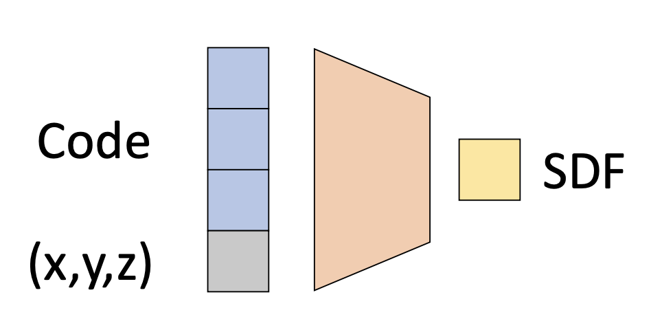
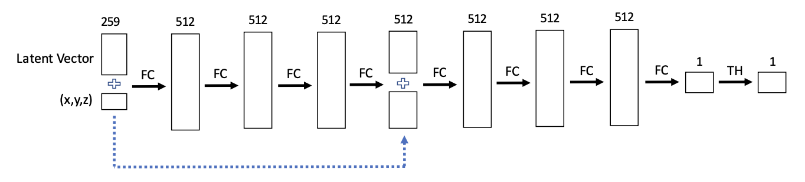
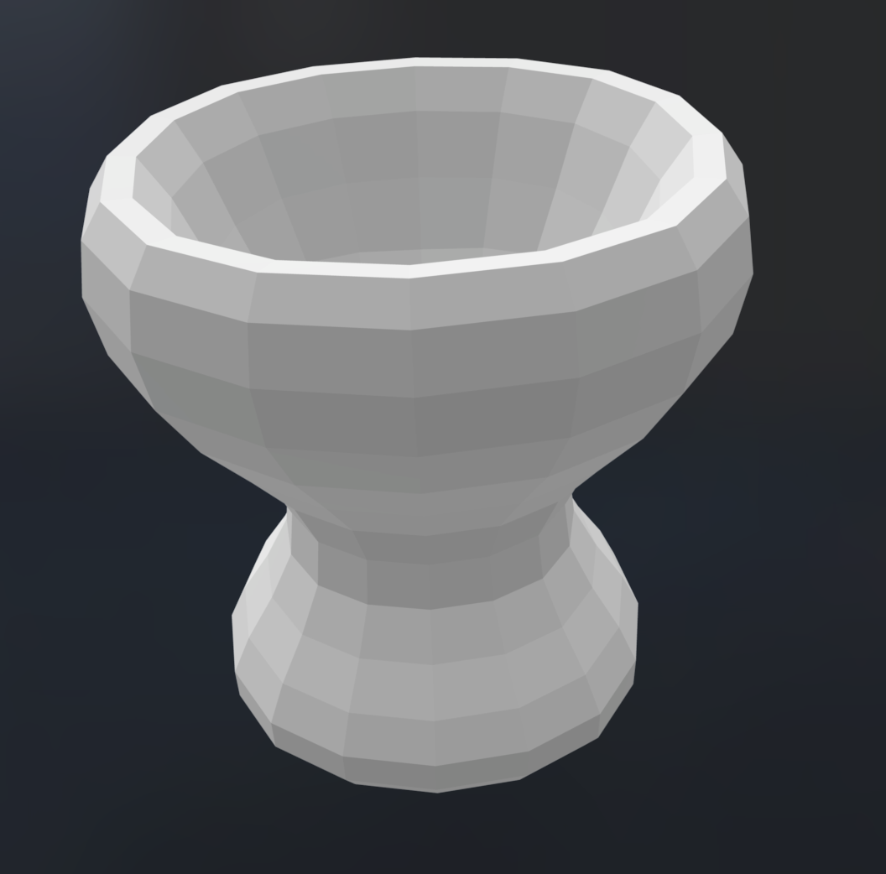
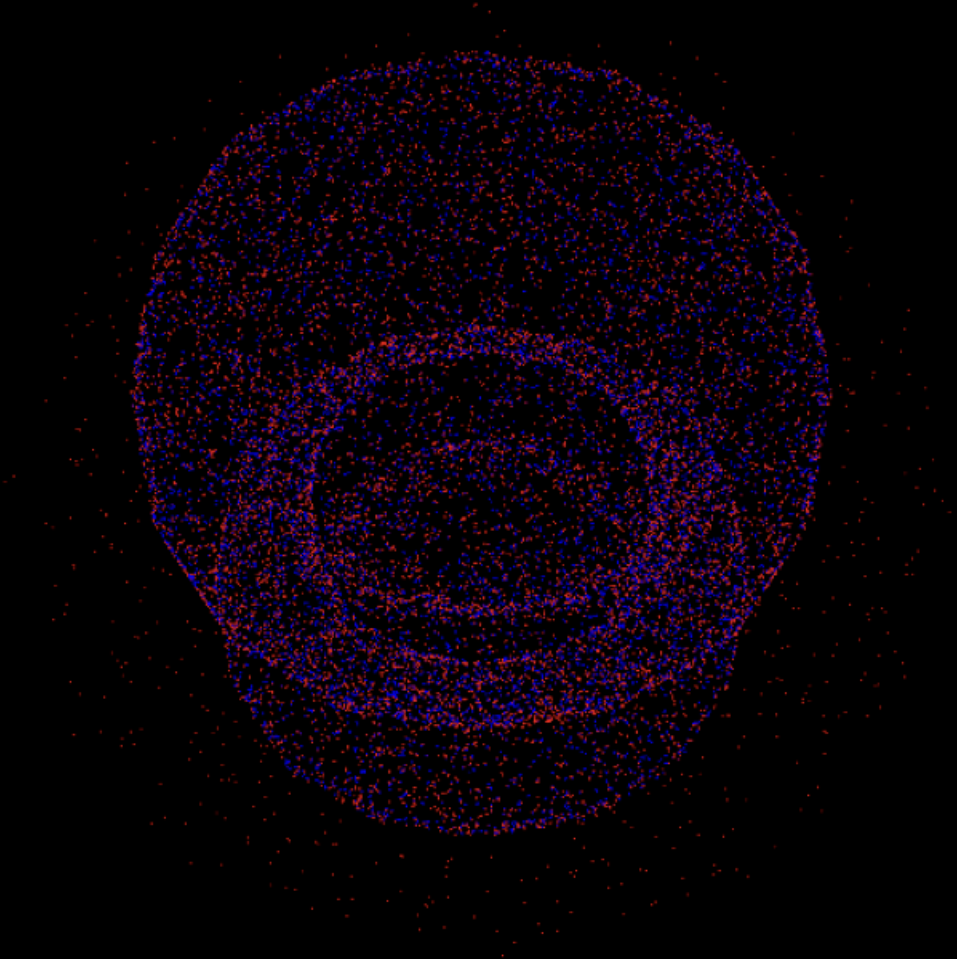
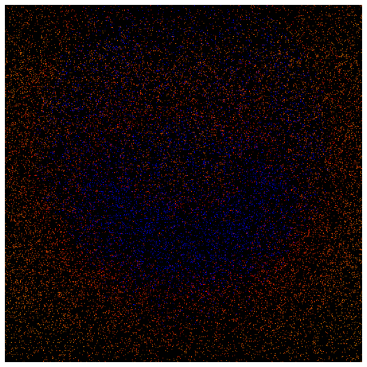
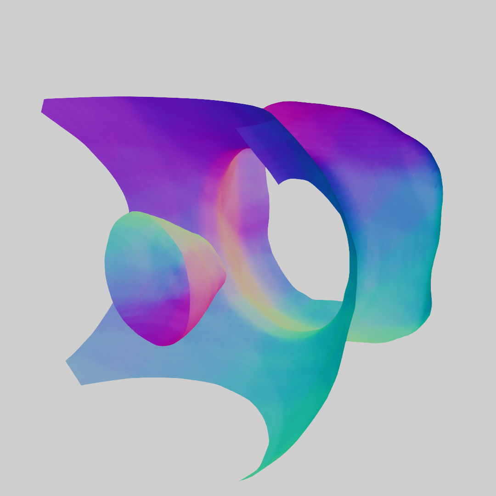
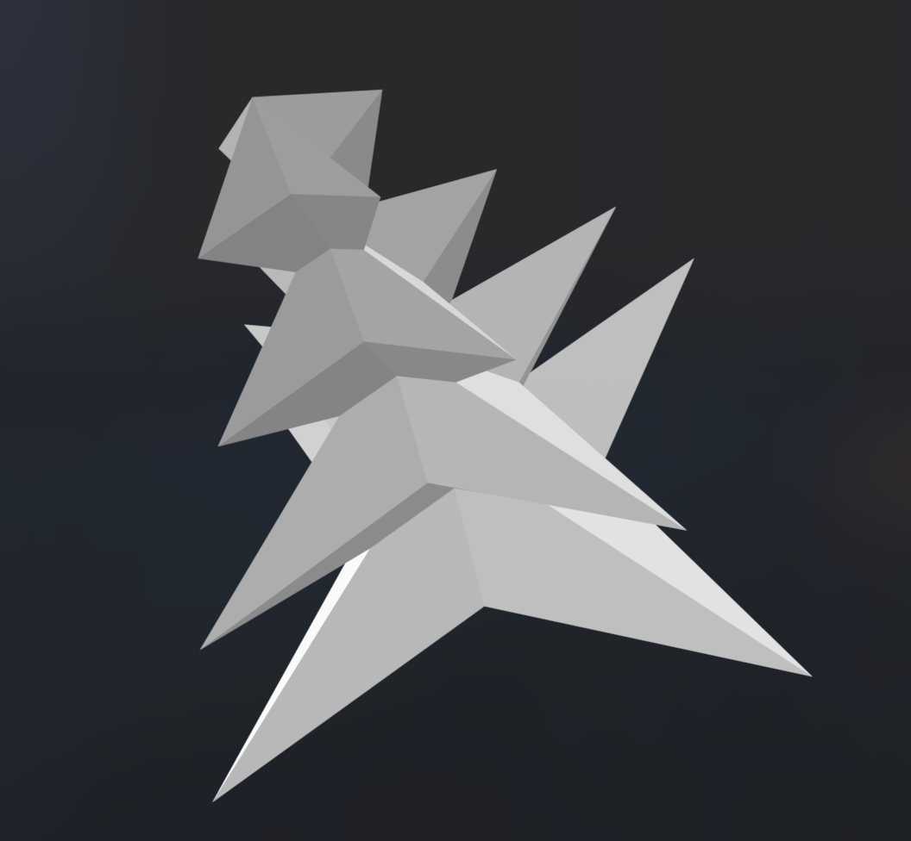
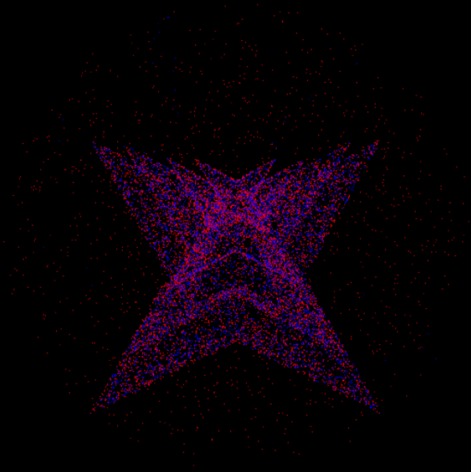
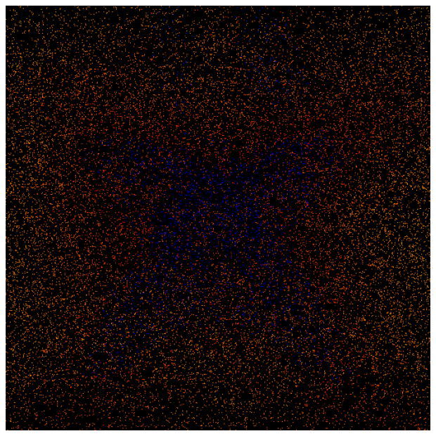
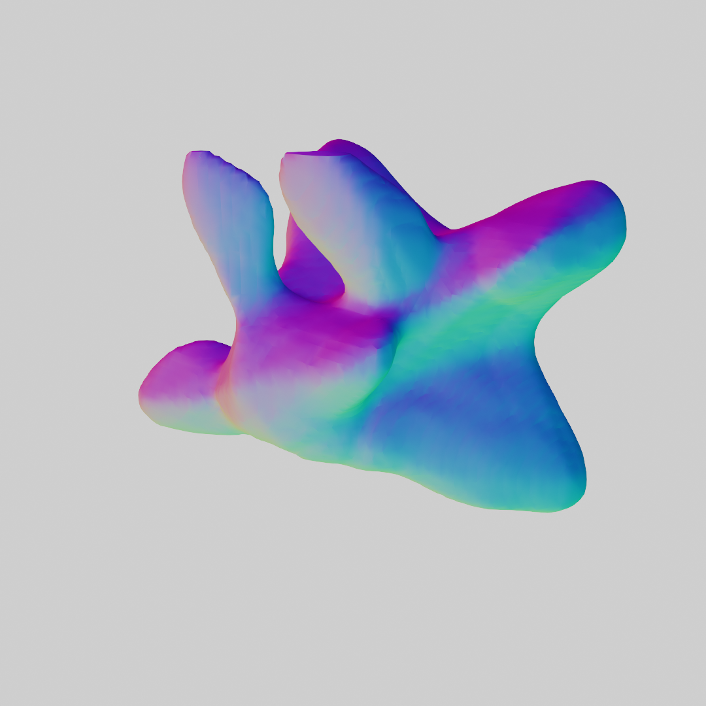

Method 1: Learning Approach
Architecture
The learning based approach involves using the DeepSDF architecture
with Lipschitz regularization. The key insight into this approach is
understanding how neural fields are encoded as signed distance
functions (SDFs). In the left image below, we can see that an input
latent vector (blue) concatenated with an input query point (gray)
is fed into the DeepSDF network. The output SDF (yellow) returns a
float value representing how close or far from the surface the query
point is


The right image above shows the DeepSDF architecture. In our
implementation, we used five fully connected layers with TanH
activations, LayerNorm, and Lipschitz regularization. While the
DeepSDF paper notes that using a random latent vector which is
optimized during training provides better results, we used the
one-hot encoding. That is, given let's say three input meshes (A, B,
C), the corresponding latent vectors would be [1, 0, 0], [0, 1, 0],
[0, 0, 1]
We used MSELoss between the ground truth SDF and our network's
predicted SDF. Additionally, we added in a Lipschitz regularization
term for interpolation stability.
Reconstruction Results
The first task we attempted was a simple reconstruction of two input
meshes. As a result, out latent vector dimension is 2, with the input
vector having dimension 2 + 3 = 5, including the query point. Below,
we display the input mesh and the ground truth point cloud
representation of the input mesh. Note in the point cloud
visualizations, red points denote positive signed distances from the
surface and blue points denote negative signed distances.
The right two columns are our reconstruction results. The point cloud
(PC) reconstruction shows a grainier version of the ground truth. From
the latent SDF, we used marching cubes (MC) to reconstruct a mesh,
which we rendered in Blender.
Input Mesh
Ground Truth PC
PC Reconstruction
MC Reconstruction








Interpolation Results
Following from the above reconstructions, we used the same input
meshes to describe interpolations. We denoted the bowl mesh as [1, 0]
and the spiky mesh as [0, 1]. Below we visualize various
interpolations in the latent space. The left depicts a linear
interpolation between the direct encodings of the two meshes. The
middle image depicts an interpolation from the opposite corners of the
latent space. The right image depicts a circular path centered at [.5,
.5] with radius .5. Both the right two images demonstrate the
smoothness of the latent space, even with extrapolated latent values.
 Lerp from [1, 0] to [0, 1]
Lerp from [1, 0] to [0, 1]
 Lerp from [1, 1] to [0, 0]
Lerp from [1, 1] to [0, 0]
 Circular path
Circular path